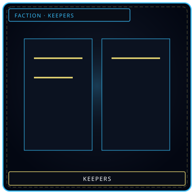
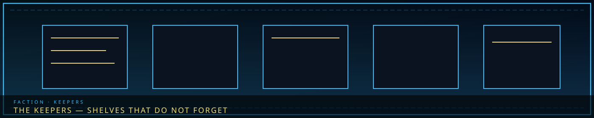

ShelvesKept files
/// RAPID JUMP:
STATUS: ARCHIVE VERIFIED |
CLEARANCE: LEVEL-4 OVERSIGHT |
PROTOCOL: REVERIE DIRECTORATE
ARTICLE
DISCUSSION
SOURCE
HISTORY
YEAR 4,238 · DAWN OF HOPE
FACTION · ZONE A · GRAND ARCHIVE
The Keepers
“Shelves of Lament kept as files. The Keepers do not wash names.”

 LamentWhat they store
LamentWhat they storeOverview
The Keepers (기록관 — Girokgwan) are Somnarak’s memory guild. Power is information: Grand Archive (Building 2, Zone A, northeast of the Tree), Echo vaults, which past is still speakable. Head Keeper (기록장 — Girokjang) is a Council seat. Philosophy: “We hold what would otherwise be lost. This is not power — it is responsibility.” Source calls them the guardians of identity.
They are not Washers. Washers erase. Keepers store. They are not Weavers. Weavers walk Somnus; Keepers walk shelves — though some shelves extend into Dream-space. Resonance: The Archive — crystallize sorrow into Echoes, pay with self.
The Grand Archive
Second-largest building in Zone A. Vast, labyrinthine, whispered. The air tastes of old tears. It extends deep underground — oldest records in the lowest vaults. Shelves extend into Dream-space; some records exist only partly on the street. The building is alive: it answers to feeling. Walk in angry and the Index will not help.
What they do: preserve history (records, memories, artifacts); maintain Echo vaults; research, translation, verification; legal extraction, storage, imperfect restoration; memory-related transactions the Council pretends are not a market. Deep vaults hold Cheongula causation — the truth that could unseat the Council. Keepers have those records and choose not to release them. Preserve history, or control it?
Related geography, not the same room: the Memory Archive under the Tree is a hungry Place that consumes visitors as stories. Grand Archive is the guild’s public face. Oldest Keepers remember the city and forget their names. See Alpha Tree.
Work, structure, tools
Line: Head Keeper → Senior Archivists (zone curators) → Archivists → Scribes → apprentices. Beside: Memory Division (extraction, storage, restoration), Vault Guard (deepest, most dangerous records), Verification Bureau (authenticity of records and memories).
Memory Lens (기록 렌즈 — Girok Renjeu): a monocle of crystallized memory. An Echo near it plays as sight, sound, and feeling. Compare two memories and contradictions light. Unique trait: the lens remembers the viewer. Look too often and it mixes the Keeper’s own past into the playback. The boundary between self and other blurs.
Whispering Index (속삭임 색인 — Soksagim Saegin): not one device — Han-crystal threads through the Archive. Touch, ask, and it answers in whispers, riddles, fragments. Catalogs every Echo by emotion, date, source, content. Cross-references the unrelated. Some Keepers say it is alive. It talks constantly. Comforting. Maddening. Memory Fray has a copy of the index; the Keepers do not know.
Relations
Council depends on Keepers for legitimacy and tells them some truths should stay buried. Architects clash over demolition of historic sites — preserve vs build. Collectors trade memories; Keepers recover stolen Echoes and keep them. Wardens: Warden misconduct sits filed and forgotten. Weavers: rivalry on the surface, secret exchange underneath. R.D. gets Cheongula-like event records. Frays: Memory Thieves and the Memory Fray steal from the Archive. Citizens trust Keepers with memory they thought lost.
If Keepers fall — Han-fire in the Grand Archive — Before-Time fragments die, the Maw’s secret dies, and the city asks whether an unremembered event happened. Who fills the void: Weavers try the Dream; the Directorate keeps what it already copied; citizens fall back on oral tradition. Taboo 4 is why the past is not a playground; the Archive is the city’s argument that the past must remain readable. Question: “If no one remembers, did it happen — or does the city write a new history?”